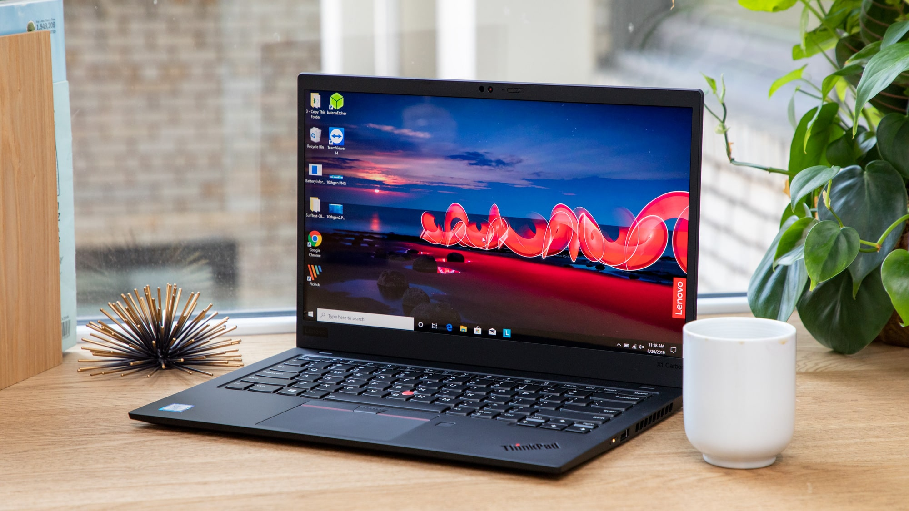

|  |
Laptop adalah komputer bergerak (bisa dipindahkan dengan mudah) yang berukuran relatif kecil dan ringan, beratnya berkisar dari 1-6 kg, tergantung ukuran, bahan, dari spesifikasi laptop tersebut, laptop dapat digunakan dalam lingkungan yang berbeda dari komputer. Mereka termasuk layar, keyboard, dan trackpad atau trackball, yang berfungsi sebagai mouse . Karena laptop dimaksudkan untuk digunakan di mana saja, Laptop memiliki baterai yang memungkinkan untuk beroperasi tanpa terhubung ke stopkontak (sumber listrik). Laptop juga termasuk adaptor daya yang memungkinkan untuk menggunakan daya dari stopkontak dan mengisi kembali baterai.
Laptop secara signifikan lebih lambat daripada komputer desktop. tetapi kemajuan teknologi manufaktur telah memungkinkan laptop melakukan hampir sama dengan Komputer PC desktop. Bahkan, laptop high-end sering melakukan lebih baik daripada komputer desktop yang mempunyai spesifikasi rendah. Kebanyakan laptop juga mencakup beberapa I / O port, seperti USB port, yang memungkinkan keyboard standar dan mouse untuk digunakan dengan laptop. Laptop modern sering termasuk adaptor jaringan nirkabel / wireless, yang memungkinkan pengguna untuk mengakses Internet tanpa memerlukan kabel.
Sebuah komputer laptop, biasanya disebut komputer notebook oleh produsen, terdiri dari baterai atau AC-powered komputer pribadi umumnya lebih kecil daripada tas yang dapat dengan mudah diangkut dan mudah digunakan di perpustakaan, kantor,atau pada pertemuan tertentu. Sebuah laptop biasanya berat kurang dari £ 5 dan 3 inci atau kurang tergantung ketebalannya. Di antara pembuat paling terkenal dari komputer laptop adalah :